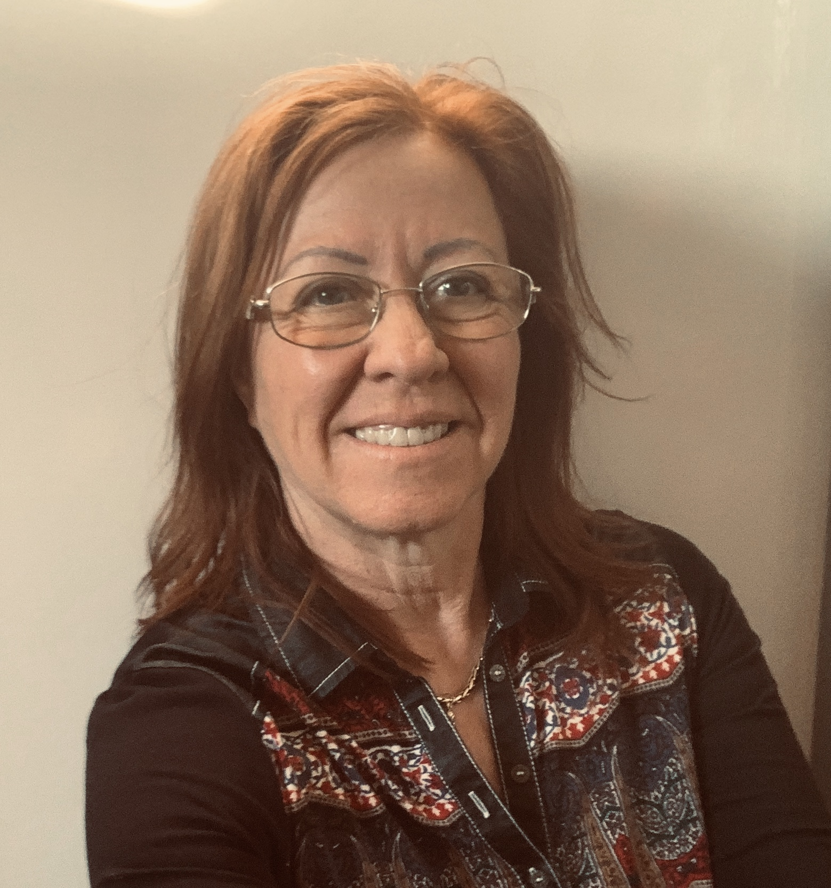

A Cronos Társkereső Klub - CTK 1998-as alapítása óta támogatja a társkeresőket az eredményesebb ismerkedésben. Az irodai Prémium tagság keretében személyi tanácsadóink az országszerte, nyújtanak szakmai segítséget az ügyfeleknek az ideális társuk megtalálásában. Több tízezer párkapcsolat jött létre felkészült kollégáink közreműködésével az esetek többségében a regisztrációt követő 3 hónapon belül. A Prémium tagságot azoknak ajánljuk akik csak számukra megfelelő, valós adatokkal rendelkező partnerrel kívánnak találkozni, kihagyva a felesleges levelezgetést és a komolytalan szándékú tagokkal való randevúkat.
A CTK regisztrációs oldalán van lehetőséged ingyenes tagságra is. Viszont ez esetben a siker kulcsa kizárólag a mázlifaktor. Ha szerencséd van, megtalálhatod a párod akár egyetlen nap alatt...
...de mi van, ha nem akarod a véletlenre bízni? Prémium tagjaink tapasztalatai azt mutatják, hogy Cronos személyes tanácsadói segítséggel gyorsan megtalálják a számukra minden szempontból megfelelő partnert.
Az online ismerkedéssel kapcsolatban a következőket szoktam hallani ügyfeleimtől:

Igen. Működik. Minden ügyfelemet személyesen ismerem, ezért szeretnélek Téged is megismerni! Tudom, hogy kinek milyen az értékrendje, a preferenciái és ez alapján tudok segíteni a megfelelő partner megtalálásában. Ezáltal tudlak Titeket közös ismerősként bemutatni egymásnak.
Ismerj meg engem Te is!
Nagy Ágnes vagyok a Cronos Egri Társkereső Iroda vezetője. Trénerként elkötelezett híve vagyok annak, hogy segítsek a hozzám fordulóknak. 1991 óta segítem az ügyfeleimet, hogy jobb és kiegyensúlyozottabb életet éljenek saját elkötelezettségük alapján.
Életem során én is megtapasztaltam a magányt és a társkeresés ezen formáját – nem beszélve arról, hogy nekem is rá kellett jönnöm, hogy egy „beszűkült” ismeretségi köröm volt. Ezen az úton én már végigértem, sok tapasztalattal rendelkezem, melyet szívesen megosztok Veled, ha valóban komoly kapcsolatot keresel. Segítek abban, hogy megtaláld az egyéniségednek és elvárásaidnak megfelelő partnert.
A Cronos Társkereső Klub az egyetlen olyan hely, ahol teljes diszkréció mellett, személyes kapcsolattartással, egyénre szóló tanácsadással, megbízható és valós adatokkal rendelkező személyek ismerkedhetnek egymással. A klasszikus formában történő ismerkedési szokás, újra virágzó korszakát éli. Ezen normák mellett privát online tér is adott az elfoglalt vagy egymástól távol lévő ügyfelek részére, mellyel irodánk egyben választ is ad a 2020-as évek kihívásaira.